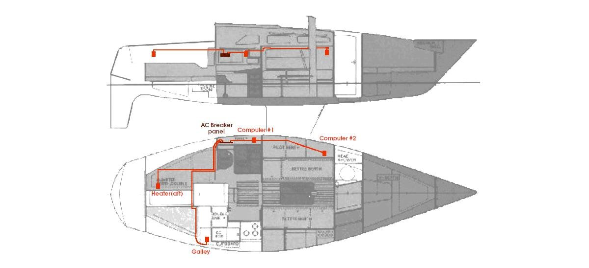

ac electrical refit
23.01.05
Victoria, BC. Canada.
AC wiring
Pino's wiring before (AC on the left)...

Pino's wiring after!

CONNECTIONS
The AC on the boat was also on our to-do list, but we didn't expect the wiring to be that problematic. We found wires with holes in the insulation, some terminals had corrosion, and many of the outlets had rust.
Shore side power (AC) is distributed throughout the boat by hot wires or ungrounded conductors. A boat like ours uses a 30 ampere, 120 volt electrical system. The shore power cord provides power from the shore to the boat. From the shore power receptacle on the boat, conductors are led to the boat's AC breaker panel, from which power is distributed through a variety of circuits.
When sizing a system, remember this simple equation:
Volts x Amperes = Watts
Our system, which is 30A at 120V, has 3,600 available watts.
Our old outlets looked fine on the outside, but weren't at all healthy-looking underneath.
Our boat had 3 GFCI outlets installed, and after much deliberation, we decided to replace them with regular outlets. Our old 120V outlets were all wired together on the same 30A breaker (meeting on a large gang terminal), and 3 out of the 5 were GFCIs.
Now the 4 outlets have been spread over 3 different 15A breakers: galley(1), computers(2, daisy-chained) and aft(1). We removed the outlet in the head, and moved two away from moisture-prone areas, and plan to put covers when they're not in use. We've never triggered our GFCI outlets, despite the fact that the marine environment is damp, and corrosion-prone, and even given the sensitive nature of those outlets (they can detect a 5mA threshold of current imbalance).
CONNECTING 120V OUTLETS
Connecting the outlets is intimidating, given the higher current running through them, but it isn't too difficult. When connecting anything, we turn the breaker off, and remove the power cord from its socket on the boat (just to be safe).
It is difficult to mess up the wiring of an outlet, because the outlet itself has writing overtop, telling you what to put where, and each screw is color-coded. Ours are silver for white(neutral), gold for hot(black) and green for ground.
On our outlets, the screws aren't removable, so we can't use terminal rings, so instead our wires are all terminated by flanged fork heat-shrink terminals. Flanged forks have the ends of the forks bent up, which serves to "grab" the screw or bolt that they are being attached to.
DAISY CHAINING?
Two of our outlets are daisy-chained, meaning that they are connected on the same circuit and share a 15A breaker. The outlets have two screws on each side, which can accommodate two hot, and two neutral connections.
To connect two outlets together, run a hot and neutral wire from the first outlet, to the second. It is necessary to run the ground wire between both outlets as well, but the issue with some models is that there is only one ground(green) screw. To remedy that, the protective boxes for the outlets are sometimes fitted with a bar containing additional grounding screws, making it possible to daisy chain the grounding wire from there.
Like on the DC side, a lot of the AC wiring is hard to wrench out of the walls. We were able to keep two of the outlets where they were (galley, and near the navigation table), and had to move the rest. We picked new locations to which we could route wires easily. Two outlets were below the waterline, near the floor, we removed one and moved the other higher in the cabin (port side, in the pilot berth). Our boat used to have a water heater with its own outlet, hidden deep in the boat, we removed it, and installed one in the quarter berth. We plan to use the quarter berth outlet to run an electric heater, during cold times when we're at a dock and can't heat the boat with the woodstove. Few places allow for the use of a woodstove at a dock.
This is how Pino's 120V outlets are setup now.
As mentioned previously, all of our 120V outlets were wired on the same 30A breaker. Now, all 4 outlets are separated over 3 different 15A breakers.
In the photo below, we installed the battery monitor, and engine hour meter.

Our new breaker panel has a fancy reverse polarity indicator, if after connecting the shore power cord a polarity warning indicator is activated (red light comes on), it is important to immediately disconnect the cable.
We also kept an indicator light from our old breaker panel that comes on when the cord is plugged in, at least then we know if there is power coming to the boat at a glance, even before we've turned the AC breaker on. Sometimes the shore power outlet needs to be switched on at the dock, other times there is a problem and it isn't giving power at all, the light will help us figure out what is what more quickly.
Pino was equipped with a few AC lights before (3). We kept one in the quarter berth, but removed the rest. We think it better overall to install more DC lights.
The engine room has a light on its own breaker, which we thought was very unnecessary. We'll install another light (DC), but it'll share the same breaker as the other cabin lights.
We bought a roll of AC wiring. For AC, the wiring is as follows:
White to Neutral
Green to Ground
Black to Hot
The wiring we bought are all tucked into a sleeve, making it easy to route them together throughout the boat. The pilot berth is now housing a lot of visible wiring, but we think that is fine. We prefer having them in view than hidden/trapped behind a wall.
When all is setup and connected, it is important to check the work with the shore power cord set connected and the power turned on. Using a volt meter, check from the hot wire(black) to both the ground wire(green), and the neutral wire(white) to make sure that the proper voltage is present and that the polarity is correct in the circuit. Check from the neutral wire to the ground wire to make sure there is no voltage present.
We also re-did all of the DC electricals, see dc electrical refit.